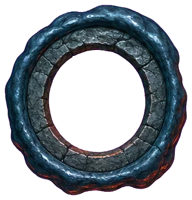
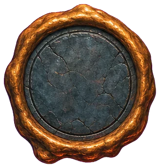
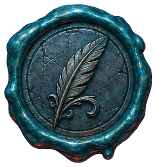
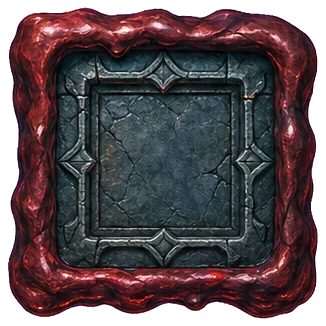

邮差 · 原子零件墙
阶段 3：瓷砖、框、控件、令牌，全部从定稿图里取或按令牌画；标题字上线前换隶书预渲染。
一、瓷砖（无缝，从定稿图裁）
stone · 祭坛石
iron · 铁牌锈面
parchment · 纸纹
sky · 风暴夜
wood · 柜背板
二、框
邮 差
书 架
梦溪笔谈第 12 页 / 共 96 页卷一 · 故事
羊皮纸板
正文十八像素、行高一点七五，墨字在骨白纸上，对比约十二比一。板的角是铁包角，边是墨线加锈线。
手写字用马善政：记一笔，落笔有墨点。
三、控件
接着读
目录
放回
书架档案架笔记本

没读 · 空圈
读了 · 实心
写了批注 · 羽毛
结卷 · 方印四、卷轴弹窗（卷轴零件待出，先用纸板加铁牌当头）
合上这本书？
读到第 12 页。合上后书回到架上，下次从这里接着读。
再读会儿合上
五、图标二十（待出零件表，占位）
书
卡
本子
烛
乌鸦
灯笼
羽毛笔
蜡封
沙漏
放大镜
齿轮
日历
书签
链环
钥匙
大门
碑
卷轴
信箱
骨手